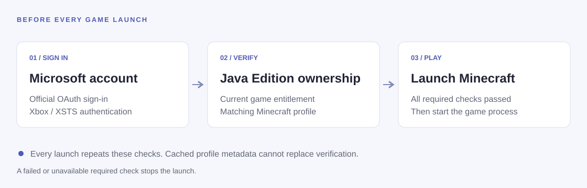

Your Microsoft account
Complete sign-in directly on Microsoft’s pages. Account authentication uses official Microsoft, Xbox and Minecraft services.
An independently maintained distribution of the open-source HMCL launcher, with Microsoft account sign-in and Minecraft: Java Edition ownership verification.
Application version 3.17.0.362 · Microsoft accounts · Private repository access required
Complete sign-in directly on Microsoft’s pages. Account authentication uses official Microsoft, Xbox and Minecraft services.
Every launch requires a current game entitlement and a matching Minecraft profile. Missing access, refused verification or a network failure stops the launch.
Complete sign-in and consent directly on Microsoft's pages.
HMCL checks your current Java Edition entitlement and matching Minecraft profile.
The game process starts only after the required checks pass.

HMCL 3.17.0.362 · Published October 23, 2026
Release notes and all 9 assets ↗Downloads are hosted in the private HMCL-Desktop repository. Sign in to a GitHub account with repository access before downloading. Without that access, GitHub may show a 404 page.
The launcher and JavaFX dependencies. Requires an installed Java runtime.
Download ZIP 38.3 MiB · Windows x64The standalone Windows launcher executable.
Download EXE 11.0 MiB · WindowsRun with a compatible Java runtime on your system.
Download JAR 10.6 MiB · JavaA shell entry point for systems with a compatible Java runtime.
Download SH 10.6 MiB · Shell / JavaThe source archive matching this launcher release.
Download source 6.0 MiB · ZIPCompare a downloaded file's hash before running it.
Download checksums 703 bytes · TextMinecraft manifests, game binaries, asset indexes and assets use Mojang's official HTTPS sources. There is no community mirror fallback for this content.
Loader and addon metadata can use BMCLAPI or MCIM alongside the original providers. Download mirrors are separate from account authentication.
Releases include the launcher, its dependencies, corresponding source and SHA-256 checksums. No Minecraft game installation or personal account data is bundled.
Launcher self-updates are disabled. Obtain a new launcher release manually. Game installation and game updates remain available when you request them.
Source and release artifacts are maintained in a private repository. Download links require repository access. This site publishes project information only.
Launcher usage telemetry, public-IP geolocation and launcher self-updates are disabled. Account sessions remain in local HMCL files; protect those files as private credentials.
Microsoft, Xbox and Minecraft account requests go to their official endpoints. Authentication credentials are not sent to download mirrors.
Launch authorization is short-lived, single-use and kept in memory. Reusable game launch scripts containing account credentials are not exported.
This static website uses no analytics, login forms or browser storage. GitHub Pages handles hosting requests under GitHub's privacy statement.
This distribution is maintained by XDRi.Club, through the jnlk-cn GitHub account. It is derived from the upstream HMCL project and retains its copyright notices and GPLv3 license with upstream additional terms.
It is not submitted, published or maintained on behalf of the upstream HMCL team, Mojang Studios or Microsoft. The launcher retains the HMCL interface and displayed program version; this does not imply an upstream release signature or official endorsement.
Project contact: minemacraft@outlook.com
启动器使用微软账户认证。每次启动游戏前，都必须在线验证 Minecraft Java 版游戏资格及匹配的正版角色；验证失败时停止启动。
游戏本体与资源使用 Mojang 官方 HTTPS 来源，第三方组件可使用独立镜像。程序界面和显示版本号保持 HMCL 原有形式，遥测、公网 IP 查询和启动器自动更新已禁用。
本项目由 XDRi.Club 独立维护，不代表上游 HMCL 团队、Mojang 或 Microsoft。微软登录的实际可用性取决于官方应用访问权限。项目源码和发行包位于私有仓库。
下载 HMCL 3.17.0.362：提供 Windows 便携包、EXE、JAR、SH、对应源码和 SHA-256 校验值；需使用拥有私有仓库访问权限的 GitHub 账号。
项目联系邮箱：minemacraft@outlook.com